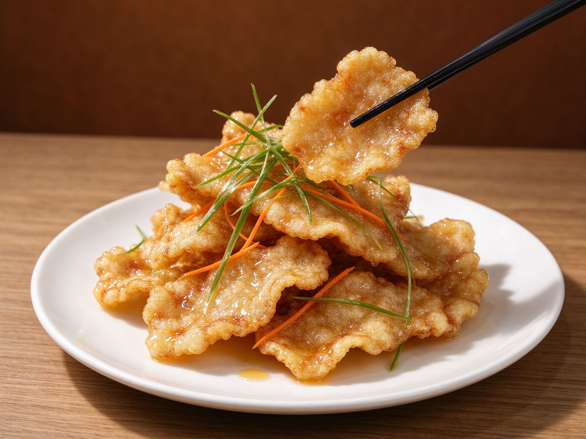

Guo Bao Rou (锅包肉): Northeast China's Crispy Sweet-and-Sour Pork
If you've had "sweet and sour pork" from a Cantonese takeout, you haven't had guo bao rou. This Northeastern dish is thin slices of pork wrapped in an almost translucent potato-starch shell, fried twice until it crackles, then tossed for a few seconds in a clear vinegar-sugar sauce scattered with scallion and carrot shreds. It's crisp, sharp, sweet, and slightly sour — and it has its own devoted following for a reason.
What Guo Bao Rou Actually Is
Guo bao rou (锅包肉, literally "pot-wrapped pork") comes from Harbin, in China's far northeast. The story most often told is that it was created in the early twentieth century for Russian guests at an official's residence — a sweet-and-sour dish adapted to foreign palates, originally called guo bao rou for the quick "wrapping" in sauce in the wok.
Two things make it distinctive:
- The shell is potato starch (not wheat flour, not egg batter), which fries up crisp and slightly glassy rather than cakey.
- The sauce is a clear sugar-and-vinegar glaze, not a ketchup-thickened sauce. In Harbin it's white vinegar and sugar; the Shenyang (Liaoning) version in the south of the region adds tomato ketchup and comes out orange-red.
Ingredients (Serves 3–4)
For the pork
- 400 g (14 oz) pork loin or tenderloin, sliced thin (about 3–4 mm)
- 1/2 teaspoon salt, 1 tablespoon Shaoxing wine, a pinch of white pepper
- 100 g potato starch (cornstarch works, but potato starch is crispier)
- About 120 ml cold water, added gradually
- Neutral oil for frying
For the sauce
- 3 tablespoons white rice vinegar (or white vinegar)
- 2–3 tablespoons sugar, to taste
- 1 tablespoon light soy sauce (optional, for a hint of depth)
- 1/2 teaspoon salt
- 1 teaspoon potato starch mixed with 2 teaspoons water (slurry)
- 2 scallions, cut into thin shreds; 1 small carrot, julienned; a few ginger shreds
Method
- Prepare the pork. Slice against the grain into thin, even pieces. Toss with salt, Shaoxing wine, and white pepper, and leave for 15 minutes.
- Make the batter. Put the potato starch in a bowl and add cold water little by little, stirring until it forms a thick paste that coats a slice and drips slowly — thicker than tempura batter. If it's runny, add more starch.
- Mix the sauce. Combine vinegar, sugar, soy, salt, and the starch slurry in a small bowl. Stir well just before use — the starch settles.
- First fry at 160°C / 320°F. Coat each slice, let the excess drip off, and fry in batches for 1–2 minutes until pale gold and set. Don't crowd the pan.
- Second fry at 190°C / 375°F. Fry the pieces again, 30–45 seconds, until deeply golden and audibly crisp. Drain on a rack, not paper towels, so they stay crunchy.
- Toss in the sauce. Pour off most of the oil, wipe the wok, and heat it until hot. Add scallion, carrot, and ginger shreds for a few seconds, then pour in the stirred sauce. As soon as it bubbles and thickens, add the fried pork and toss quickly — 10–15 seconds, no more.
- Serve immediately. Guo bao rou is a dish with a schedule: it's best in the first five minutes while the shell is still crackling.
Why It Stays Crisp (and Why Yours Might Not)
- Potato starch, dry batter, no egg. Egg batters go soft and fluffy; this one goes glassy and hard-crisp.
- Double frying. The first fry cooks the pork through; the second drives out moisture and locks in crispness.
- A very short sauce toss. The sauce is a glaze, not a bath. Tossed too long, it steams the crust and you get soggy slices.
- Serve it on a rack. Trapped steam from a paper towel-lined plate softens the bottom layer fast.
Serve It With
Guo bao rou is the centerpiece of a northeastern-style meal. Pair it with plain steamed rice, a cold cucumber salad, and something braised — our braised pork belly or a bowl of tomato and egg stir-fry both work well. And keep a spoonful of chili oil on the table for anyone who wants heat.
Make it once and the takeout version will never satisfy you again — because this one is thin, crackling, and bright in a way that a sauce-drowned version never is.